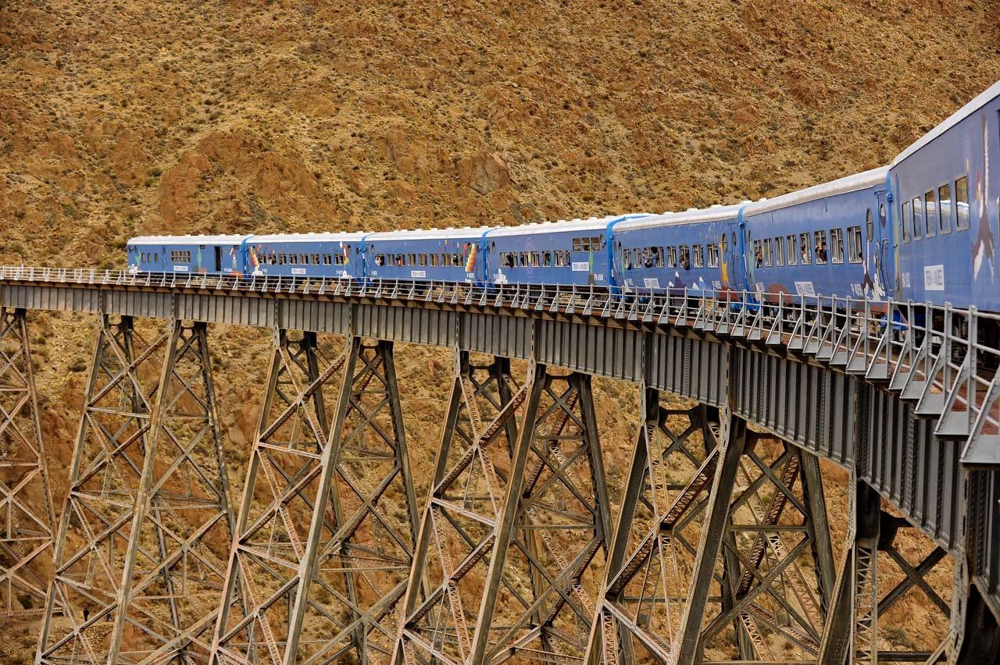

Salta, la linda
Inmensos salares, volcanes sagrados, selva de montaña, ruinas preincaicas, pequeños pueblos a miles de metros de altura, guanacos y vicuñas que pastan entre cardones. Estos son los paisajes que te rodearán cuando viajes por la provincia de Salta, siempre en compañía de una de las gastronomías más apreciadas de Argentina
LOS MEJORES LUGARES PARA RECORRER EN SALTA
-
Salinas Grandes
Las Salinas Grandes son las terceras más grandes del mundo y están situadas entre los límites de las provincias norteñas de Jujuy y Salta. Cubren una importante superficie de 525 kilómetros cuadrados de los departamentos de Tumbaya y Cochinoca. Están ubicadas a 3.350 metros de altura sobre el nivel del mar y la sal tiene de 10 a 50 centímetros de espesor, originariamente fueron una laguna de fondo pantanoso y chato pobladas de microorganismos y vegetación acuátil. Si te interesa conocer en profundidad las Salinas Grandes te recomiendo el tour Vuelta por las Alturas, donde vas a contar con traslados y un guía para recorrer este exótico sitio y además, vas a poder conocer los sitios más importantes que la rodean como la Quebrada del Toro, el pueblo y las ruinas de Tastil, San Antonio de los Cobres, las Cuesta de Lipán y los lugares más maravillosos de Jujuy como Pumamarca y el Cerro de los Siete Colores. Otro paseo muy recomendado es el circuito en bicicleta por las Salinas Grandes que te permitirá recorrerlas en su totalidad y disfrutar de los paisajes que hacen contraste con el azul del cielo. Es una manera diferente de vivir esta maravilloso lugar y llegar a Pumamarca, otro sitio que te quitará varios suspiros con su belleza natural! Si te divierte la idea de recorrer las salinas en un todo terreno, el tour safari a las nubes puede ser una buena decisión. La excursión comienza desde la ciudad, donde una 4x4 pasará por tu hotel y durante el viaje hasta las Salinas van a ir atravesando quebradas, valles y el camino que realiza el Tren a Las Nubes. A través de este tour tenes la posibilidad única de combinar tres paisajes imperdibles en un día inolvidable. El primero es el "Camino a las Nubes" hasta el Viaducto de La Polvorilla, luego singuen el cruce de la Puna por la Ruta 40 hasta llegar a Salinas Grandes, y por último van a visitar la Cuesta de Lipán, realizando un abrupto descenso de 2000 metros de altura en 35 kilómetros, para llegar al pueblo de Purmamarca.
-
Tren de las Nubes
El Tren a las Nubes es un paseo maravilloso con un tren que recorre lugares maravillosos hasta llegar a la puna, donde además de disfrutar de paisajes increíbles, vas a poder observar una de las epopeyas de la construcción ferroviaria, que llega hasta los 4.200 metros de altura. Este tren tiene más de 50 años de antigüedad, fue diseñado por el ingeniero norteamericano Ricardo Fontaine Maury. Una vez que el tren se pone en movimiento durante 50 minutos no se detiene y va con una marcha lenta hasta llegar al Viaducto La Polvorilla, durante este tramo hay un guía que va vagón por vagón contando su historia y curiosidades sobre el recorrido. El tren solo frena una vez, a la altura de donde se encuentra la abandonada mina Concordia, para que la locomotora se ubique detrás y empuje al tren hasta el final (no se puede bajar). Es un tramo corto pero impresionante por los paisajes y por la altura, hasta que finalmente el famoso viaducto aparece ante la vista y deslumbra con sus vigas de 63 metros, extendidas a lo largo de 223 metros. Una obra maestra terminada en 1932, donde al llegar a la estación los viajeros son recibidos por un grupo de chicos que tocan canciones andinas con sikus y quenas. También entonan la Aurora junto con el ondular de la bandera contra un cielo. En La Polvorilla donde se invita a descender a los pasajeros antes de retomar la vuelta, se pueden observar puestos de artesanos locales con tejidos de lana, se acercan los niños del pueblo con sus llamas y ovejas para ser fotografiados. Una vez que todos recorren la zona se inicia la vuelta al punto de partida en San Antonio de los Cobres.
-
San Antonio de los Cobres

San Antonio de los Cobres es un pueblo pequeño de altura desde el cual parte el tren a las nubes y es considerado la capital de la puna. Lo que podes encontrar es un poblado con una iglesia, una escuela, locales de comida y, por supuesto, sus minas de cobre y mineros que representan la actividad principal de la zona. La llegada de los turistas y visitantes hace que los artesanos, en su mayoría mujeres ya que los hombres se dedican a la explotación minera, ofrezcan a los recién llegados sus productos en la estación y en las callecitas que rodean al pueblo. San Antonio de los Cobres es famoso por ser el lugar donde de producen medias, gorros, guantes, ruanas, pulóveres, mantas y frazadas, hechos en telares así como también mediante agujas hechas incluso de grandes cardones o cactus o con la madera de un pequeño arbusto de la zona que evita los pinchazos y lastimaduras.
-
Cachi
El pueblo de Cachi se encuentra en medio de los Valles Calchaquíes, a unos 2280 msnm es un destino que a la gente le interesa visitar en los alrededores de Salta (162 kilómetros) por la magia del lugar que radica en que cada rincón parece detenido en el tiempo con las calles angostas empedradas, las casas bajas de estilo colonial y pintadas de blanco, la colorida plaza principal, el Museo Arqueológico Pío Pablo Díaz y la iglesia neogótica del siglo XIX, que es Monumento Histórico Nacional. En este pueblo pequeño todo gira alrededor de la Plaza Cachi, es el punto de encuentro para muchos y también cuenta con juegos para niños, hay una feria de artesanos muy bien cuidada para llevar algún recuerdo como ponchos, pulseritas de hilo, artesanias con formas de llamas o coya, cuencos para decorar y todo tipo de souvenirs norteños. Frente a la Plaza Central, la Iglesia San José José es uno de los edificios más representativos para visitar en Cachi. Quizá, porque ante el blanco de la ciudad, sobresale con su color amarillo, sus paredes de adobe, su techo realizado con madera de cardón y sus tres campanas en lo alto. Se comenzó a edificar en el siglo XVIII y fue declarada Monumento Histórico Nacional en 1945. Siguiendo con las edificicaciones más emblemáticas de Cachi esta el Museo Arqueológico Pío Pablo Díaz. Es patrimonio arqueológico, fue creado en 1969 es un viaje al pasado, tiene una colección de piezas indígenas donadas por Pío Pablo Díaz que permiten la interpretación de la historia prehispánica. El edificio que alberga al museo, es de fines del siglo XIX y en su origen fue una casa de familia. Otro de los sitios emblemáticos de este destino es El Nevado de Cachi, la montaña más alta de la región a 6.380 metros sobre el nivel del mar que atrae a cientos de fanáticos del montañismo año tras año y tiene acceso desde el mismo pueblo por un sendero de ripio que se encuentra señalizado desde la plaza principal.
-
Tolar Grande
Si lo que estás buscando son rincones alejados a los que pocos llegan, la experiencia de conocer Tolar Grande seguramente va a satisfacer tus ganas de aventura. Para poder recorrer esta zona de la puna es necesario un vehículo 4x4 y conocimientos del terreno, por lo que hacerlo en un tour es indispensable para la mayoría. Los recorridos son de 3 días/2 noches partiendo desde Salta y cruzando pasos de más de 4500 metros de altura, visitando pequeñas aldeas y salares hasta llegar al pueblo de Tolar Grande, punto de acceso a las maravillas naturales cercanas. Entre los lugares más destacados que se visitan en este viaje, están: Ojos de Mar: pequeñas lagunas de colores en medio del Salar de Tolar Grande, área que protege ecosistemas de estromatolitos, los seres vivos más antiguos del planeta. El Arenal: enormes dunas de arena desde donde se tiene unas vistas maravillosas a los Siete volcanes de los Andes, entre los que están el Arizaro y el famoso Llullaillaco (en donde se encontraron a los cuerpos momificados). Cono de Arita: recorriendo el Salar de Arizaro -tercero más grande del mundo- se llega a este perfecto cono que parece ser un volcán, pero que en realidad está formado por sal. La dificultad de acceso y el costo de las excursiones hace que, a pesar de ser sin dudas unas de las mejores cosas que hacer en Salta, Tolar Grande sea un lugar poco visitado por el turismo, pero quienes llegan hasta este rincón coinciden en que es una de las maravillas del norte argentino.